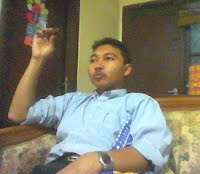

Welcome to Javanese2000.-Wadah Bertukar Pikiran Filosofi Kebatinan,Spiritual, dan Kegaiban.
Selamat datang di web kami.
Ini adalah tempat kita penggemar cerita tentang-"dunia lain"-atau tentang hal hal gaib untuk bertukar pikiran-/ bertanya jawab mengenai hal hal gaib dan spiritual.-Kami mengundang teman teman para pembaca yang memiliki kemampuan melihat-/-mengetahui hal hal gaib untuk ikut berpartisipasi dalam tulisan ini dan kami berterima kasih atas partisipasinya.-Website ini dimaksudkan untuk menjadi wadah bertukar pikiran dan pengalaman yang akan secara positif menambah wawasan dan pemahaman kita semua.-Tetapi kita boleh berbeda pendapat mengenai banyak hal, apalagi mengenai hal hal gaib yang tidak tampak mata.-Juga tidak apa apa bila ada di antara kita yang tidak percaya dengan kegaiban.-Kita harus saling menghormati dan menghargai.
Sudut pandang kita adalah pengetahuan atau pengalaman pengalaman pribadi dan fenomena fenomena yang terjadi sehari hari, mitos, legenda dan cerita cerita di masyarakat untuk dicoba diungkapkan kembali apa adanya supaya bisa dinikmati ceritanya sesuai kebenarannya yang sesungguhnya terjadi, tidak menjadi cerita yang menyesatkan dengan adanya bumbu bumbu dogma dan pengkultusan yang tidak perlu yang sering sekali malah mengaburkan kebenaran aslinya.
Tetapi tulisan tulisan Penulis banyak mengandung pengungkapan atas sesuatu yang-"tinggi"-dan-"dalam", namun dituliskan dengan kalimat dan bahasa yang sederhana, sehingga sekalipun tersirat, tetapi sesuatu yang-"tinggi" dan-"dalam"-itu mungkin tidak terasa.-Karena itu diharapkan para pembaca sudah cukup sepuh psikologisnya, bijaksana, netral dan objektif, dan kritis untuk bisa menemukan apa yang tersirat itu dan untuk bisa memahami maknanya dan kebenarannya, jangan memaknainya dengan berpikiran pendek dan sempit karena akan menjadi mudah salah paham jika menilai dangkal hanya dari yang tersurat saja.
Tulisan tulisan Penulis juga banyak mengandung pengungkapan tersirat atas sesuatu yang-"sensitif"-menurut rasa hati masyarakat umum, terutama yang terkait dengan ketuhanan dan keagamaan.-Juga yang mengenai tokoh tokoh tertentu yang sensitif untuk dibicarakan karena banyak orang memuliakan mereka.-Tetapi apa saja yang sudah Penulis tuliskan adalah berdasarkan aslinya ceritanya yang Penulis ketahui benar, tidak ada maksud untuk melecehkan, merendahkan, apalagi memfitnah.-Hanya saja mungkin karena orang sudah sedemikian memuliakan mereka, ada rasa pribadi terhadap tokoh yang diceritakan, membuat orang tidak bisa menerima cerita tentang sisi lain pribadi mereka yang tidak sejalan dengan citranya selama ini di masyarakat.-Karena itu Penulis minta maaf karena sudah menciderakan hati banyak orang.-Tetapi entah baik atau buruk isi ceritanya tidak ada maksud Penulis untuk memfitnah-/-merendahkan-/ menjelek jelekkan.
Tulisan yang berkaitan dengan budaya dan kehidupan jaman dulu dan cerita dan dongeng tentang tokoh tokoh gaib maupun manusia tertentu jaman dulu kami sajikan dengan mengungkapkan kejadian yang sungguh sungguh terjadi pada masa itu, yang sejalan dengan kesaksian dari para pelakunya dulu, yang mungkin itu akan berbeda dengan cerita dan legenda di masyarakat pada jaman sekarang.-Dalam penulisannya kondisi aslinya itu dicoba untuk diungkapkan kembali supaya kita dapat lebih mengerti tentang sesuatu sesuai aslinya kejadiannya pada saat terjadinya dulu, bukan semata mata memandang dari sudut pandang jaman sekarang yang seringkali dibumbui tahayul dan pengkultusan, atau bahkan fitnah, dusta dan pemutar balikkan fakta karena adanya motivasi tertentu, yang jelas tidak sama dengan kondisi aslinya pada saat itu terjadi dulu, tetapi justru itu yang sekarang ini sangat diyakini kebenarannya oleh masyarakat.
Secara keseluruhan tulisan tulisan Penulis banyak mengandung pengungkapan tersirat atas sesuatu yang "sensitif", "tinggi"-dan-"dalam".-Karena itu secara keseluruhan tulisan tulisan Penulis diperuntukkan hanya untuk para pembaca yang sudah cukup sepuh saja psikologisnya yang tulisan tulisan Penulis akan dapat menambah kedalaman kebijaksanaan mereka, bukan untuk orang orang yang masih-"muda"-psikologisnya yang malah bisa memunculkan keAkuan yang dangkal yang justru akan semakin mempersempit alam berpikir mereka.
Dalam semua penulisan kami usahakan supaya aspek penekanannya bukan hanya pada aspek kegaibannya atau aspek mistisnya saja, tetapi terutama adalah pada aspek kesejatiannya atau aspek hakekat dari sesuatu yang menjadi topik-/-tema bahasannya masing masing, supaya para pembaca dapat mengetahui sejatinya isinya, bukan cuma kulitnya saja, supaya para pembaca dapat mengetahui sisi hakekatnya apa adanya, entah baik ataupun buruk, bersama aspek sejarahnya.-Selain itu Penulis juga berharap supaya para pembaca mau mempelajari teknik teknik keilmuan yang terkait dengan pembuktian kebenarannya supaya juga dapat mengetahui dan membuktikan sendiri kebenarannya dan dapat mengambil sikap sikap bijaksana yang terkait dengan itu, dan diharapkan tidak lagi terpengaruh oleh dogma dan pengkultusan yang tidak perlu yang seringkali sifatnya membodohkan dan menyesatkan.
Tujuan utama situs ini sebenarnya hanyalah untuk mengungkapkan informasi dan cerita saja yang Penulis ketahui benar terjadi, bukannya mengkultuskannya, untuk mengajak para pembaca berpikiran positif, logis dan realistis, tidak lagi berpikiran klenik dan tahayul, dengan jalan mengungkapkan cerita cerita yang sebenarnya sesuai kondisi aslinya, meluruskan cerita dan mitos di masyarakat yang keliru, jika ada, menjauhkan pengkultusan, pemutar balikkan fakta, dan fitnah, jika ada, terhadap tokoh tokoh tertentu manusia ataupun mahluk halus, dan menambah pengetahuan dan kebijaksanaan untuk dapat bersikap dan bertindak jika ada di antara kita atau anggota keluarga kita yang mengalami suatu kejadian yang bersifat mistis.
Apa saja yang kita ungkapkan tentunya dilakukan dalam batasan kebijaksanaan dan kepantasan yang baik untuk semua orang.-Cerita tentang mahluk halus dan kegaiban hidup dipenuhi dengan mitos dan tahayul, dan ada banyak orang yang sengaja memunculkan pengkultusan.-Sulit untuk mencari kebenarannya yang sejati, kecuali mereka yang mempunyai kemampuan untuk menyingkap misterinya.-Tulisan tulisan di situs ini diharapkan bisa memperkaya pemahaman kita tentang dunia supranatural, bisa menjadi bahan untuk kita menyingkap misterinya secara logis dan bisa mengambil manfaatnya dalam kebijaksanaan bersikap.
Banyak orang menganggap cerita tentang mahluk halus hanyalah budaya-/-kehidupan masa lalu, tidak menyadari sepenuhnya bahwa itu adalah bagian dari kehidupan manusia yang tetap ada dan tetap berlangsung hingga saat ini, hanya bentuk dan kadar interaksinya saja yang berbeda.-Memang banyak orang yang sudah tidak percaya atau tidak peduli lagi tentang itu, namun banyak juga yang tetap meyakininya, karena mereka mengalami sendiri kejadian kejadian gaibnya. Walaupun tidak selalu disadari, tetapi itu adalah bagian kehidupan yang masih dapat kita alami sendiri hingga saat ini.-Bahkan masih saja ada orang yang melakukan cara cara bernuansa kebatinan, spiritual, rohani dan gaib dalam upayanya membantu menyelesaikan persoalan atau untuk mempermudah jalan hidupnya, dianggap sebagai bagian dari usaha dan doa.-Bagaimana korelasinya untuk kita yang hidup di jaman modern ini-?
Manusia cenderung untuk tidak berhati hati, karena manusia meremehkan pengaruh keberadaan mahluk halus, atau menjauhi mereka karena dorongan agama, atau karena memaksakan rasionalisasi sikap berpikir manusia yang tidak mau menghubung hubungkan kejadian kejadian di dunia manusia dengan mahluk halus.-Manusia menjadi tidak menyadari bahwa ada banyak sekali mahluk halus di sekitarnya di manapun ia berada yang juga memperhatikan kehidupannya dan kadangkala juga berinteraksi, memberikan pengaruh secara langsung maupun tidak langsung, positif maupun negatif, terhadap manusia, dan pengaruh negatifnya seringkali tidak dapat ditangkal-/-disembuhkan dengan cara cara modern.-Seringkali dokter dan rumah sakit, laboratorium medis, psikolog, psikiater dan rumah sakit jiwa tidak bisa menyelesaikan masalahnya jika penyebab kejadiannya adalah interaksi mahluk halus.-Tetapi ketidak tahuan itu tidak berlaku untuk orang orang yang mau mengerti, mampu mengetahui rahasianya dan mampu menangkal pengaruh negatifnya.
Meskipun sekarang jaman modern, jamannya mesin dan internet, bukan berarti para mahluk halus itu menghilang dengan sendirinya dan kejadian kejadian supranatural tidak ada lagi.-Baik kita percaya maupun tidak, mereka tetap ada, tetap saja ada kemungkinan terjadinya interaksi mahluk halus dengan manusia, hanya kadar interaksinya saja yang berkurang.-Termasuk di negara negara modern yang masyarakatnya sudah hidup dengan cara hidup dan sikap berpikir modern masih saja ada kejadian kejadian supranatural atau sakit penyakit yang sumber penyebabnya adalah interaksi mahluk halus yang tidak semuanya bisa dinalar dan disembuhkan dengan cara cara modern.
Tulisan tulisan tentang kegaiban dan mahluk halus tidak dimaksudkan untuk menyimpang dari ajaran agama dan tidak perlu dipertentangkan dengan agama apapun.-Kami tidak bermaksud mengajak para pembaca berpikiran klenik.-Justru adanya tulisan tulisan ini dimaksudkan supaya kita memperoleh wawasan yang baru dan benar, menjadi tahu ceritanya yang sebenarnya, tidak lagi berpikiran klenik, dan tidak lagi hidup dalam alam tahayul yang tidak jelas kebenarannya dan menyesatkan atau dibodohi oleh pemikiran pemikiran kita sendiri yang salah atau dibodohi oleh orang orang tertentu untuk maksud tertentu.
Begitu juga tulisan dan cerita tentang kebatinan dan spiritual, atau ketuhanan dan keagamaan.-Kami tidak bermaksud meninggikan ataupun merendahkan agama tertentu, karena agama adalah bersifat pribadi bagi yang percaya dan mengimaninya.-Yang ditekankan adalah aspek kebatinan dan spiritual ketuhanan itu sendiri yang di dalamnya juga ada pesan pesan moral untuk menambah kebijaksanaan manusia dalam memahami agama, untuk menambah baik kualitas hidup berkeagamaannya dan menambah kesadaran manusia akan perilaku berbudi pekerti dan perbuatan perbuatan mulia yang adalah dasar dari akhlak yang mulia dari pribadi yang mulia, sehingga kita semua bisa menjadi pribadi yang mulia di hadapan Tuhan, bukannya semata mata menganggap diri sendiri mulia sebagai mahluk Tuhan dan mahluk agama.
Memang segala sesuatu yang berhubungan dengan ketuhanan selalu terkait erat dengan agama dan jalan kepercayaan, tapi kami tidak bermaksud meninggikan agama atau kepercayaan tertentu, ataupun merendahkannya.-Penekanan kami adalah pada aspek kebatinan dan spiritual ketuhanan itu sendiri, bukan agama.-Mudah mudahan kita bisa dengan bijaksana membedakan ketuhanan dengan agama.
Dalam memahami kegaiban, keilmuan gaib dan mahluk halus, kebatinan dan spiritual, ketuhanan-/-keagamaan dan kebatinan-/-spiritualitas berketuhanan dibutuhkan kearifan dan netralitas yang tinggi, karena mengandung nilai kawruh yang sangat tinggi.-Jika masih belum matang dalam hikmat beragama dan berketuhanan maka akan muncul sentimen agama dan keAkuan agama.-Tak ada maksud lain dari kami kecuali hanya ingin mengungkapkan fakta dan pemikiran dengan pendekatan kebatinan dan spiritual sepanjang pengetahuan yang kami miliki.-Mungkin tulisan tulisan kami terlalu tinggi bagi orang kebanyakan, mungkin lebih cocok untuk dibaca oleh orang orang yang selama ini sudah menjalani sendiri laku kebatinan dan spiritual, terutama laku kebatinan dan spiritual ketuhanan dan laku kebatinan-/ spiritual untuk mencari kesejatian Tuhan, yang dengan kearifan yang tinggi akan lebih bisa memahami isinya dan mungkin juga akan bisa menemukan sendiri kebenarannya.
Penulis tidak bermaksud sok ahli dalam bidang supranatural, juga tidak membuka praktek paranormal-/ perguruan, hanya seorang manusia biasa saja yang beritikad baik untuk sumbang pemikiran kepada siapa saja dengan tujuan memberi manfaat untuk semua orang yang tulus menerimanya.-Walaupun banyak pandangan Penulis yang berbeda dengan pandangan dan pendapat orang orang-"tua", spiritualis, paranormal, atau cerita cerita yang berkembang di masyarakat, tapi mudah mudahan kita semua dapat memperoleh wawasan baru untuk kebijaksanaan kita sendiri dan kita dapat berpikir dan bersikap positif mengenai itu. Jika tidak berkenan, anggap saja tulisan tulisan Penulis sebagai cerita karangan biasa.
Penulis juga tidak bermaksud menggurui atau secara khusus mengajarkan ilmu ilmu yang terkait dengan kegaiban, kebatinan dan spiritual.-Apa saja yang ada di situs ini semuanya dimaksudkan untuk menjadi sesuatu yang berguna untuk dimanfaatkan untuk kebaikan hidup manusia pada jaman sekarang, terutama untuk orang orang yang interest, agar bisa menjadi bekal kemampuannya pribadi untuk bisa mengetahui dan membuktikan sendiri kebenarannya, supaya tidak tersesat-/-disesatkan karena ketidaktahuannya akan sisi kegaiban, kebatinan dan spiritualnya.
Apa yang diajarkan di situs ini adalah intisarinya saja, disajikan dengan bahasa dan tatacara yang sudah sangat sangat disederhanakan, sehingga tidak akan sulit bagi orang yang interest untuk mempelajarinya sekalipun masih awam kondisinya, dan tidak akan terasa bahwa sebenarnya itu adalah pelajaran tingkat tinggi yang jika dipelajari melalui suatu perguruan ilmu bisa menghabiskan waktu bertahun tahun-(bahkan puluhan tahun), karena biasanya pesertanya diharuskan mengikuti-"kurikulum" keilmuannya beserta segala macam tata aturannya yang untuk mentuntaskan setahap demi setahap keilmuannya saja akan memakan waktu yang panjang tapi intisari keilmuannya sendiri seringkali malah tidak diajarkan secara khusus dan eksplisit.
Bagi yang berminat mempelajari tulisan tulisan Penulis di situs ini, belajarlah secara mandiri.-Halaman halaman yang berisi pelajaran pelajaran pokok dan dasar harus benar benar dikuasai.-Dalam mempelajarinya dicermati juga isi tulisannya dari awal halaman sampai akhir.-Jangan sampai anda kesulitan menguasainya hanya karena ada isi tulisan atau kata kunci yang terlewat tidak terperhatikan oleh anda.-Tapi secara keseluruhan tulisan tulisan di situs ini adalah mengenai kebatinan, maka dalam mempelajarinya anda harus memposisikan sikap berpikir dan sikap hati yang selaras dengan sikap batin orang orang jawa jaman dulu, jangan berpikiran lain.-Dan jangan berharap Penulis akan mengajarkan semuanya satu per satu dari nol.-Juga jangan berharap anda akan bisa copy darat untuk mendapatkan arahan langsung, karena Penulis masih belum ingin dikenal orang.
Bagi yang sudah menjalani suatu keilmuan tertentu, atau sudah memiliki benda benda gaib tertentu, mudah mudahan sesudah menjadi lebih mengerti intisari filosofis sisi kegaiban, kebatinan dan spiritualnya kemudian akan menjadi lebih matang kualitas pengetahuan dan keilmuannya itu, sedangkan kembangan kembangan ilmu bisa dipelajari sendiri dari sumber lain.
Semua isi tulisan dalam halamannya masing masing akan selalu diperbarui, direvisi, disempurnakan, dsb, untuk menampilkan info terkini yang up to date, sehingga mungkin isinya tidak sama lagi dengan tulisannya yang terdahulu. Banyak halaman yang saling berhubungan, karena ada halaman yang sifatnya memaparkan suatu pengetahuan, ada halaman lain yang merupakan kelanjutannya, dan ada halaman lainnya lagi yang memaparkan bagaimana caranya mempelajari kemampuan untuk mengetahui pengetahuannya itu.-Hanya sedikit saja halaman yang merupakan artikel lepas.-Tulisan yang terbaru kebanyakan ditambahkan ke dalam halaman yang isinya berhubungan, sifatnya memperbarui tulisannya, menyempurnakan, bukan artikel lepas.-Juga ada banyak pengembangan tulisan dari ide-/-komen-/-pengalaman para pembaca dan ada banyak tanya jawab Penulis dan pembaca yang isinya menjadi penjelasan dari tulisan di suatu halaman. Karena itu untuk mendapatkan pemahaman yang lengkap tentang isi dari suatu halaman sebaiknya dibaca juga halaman halaman lain yang berhubungan isinya, termasuk komen dan tanya jawab Penulis dengan pembaca yang itu menjadi penjelasannya.
Pada bagian bawah tiap tiap halaman ada menampilkan komentar para pembaca dan tanya jawab.-Ada beberapa pembaca yang mengatakan bahwa bagian itu tidak muncul ketika halamannya dibuka, yang sebenarnya Penulis juga mengalaminya.-Seringkali itu terjadi karena koneksi internet yang lambat, atau karena adanya gangguan cuaca mendung atau hujan yang menyebabkan penerimaan sinyal internet menjadi lemah, atau karena server googlenya yang sedang agak lambat karena kebanyakan beban.-Kondisi itu bisa diakali dengan cara mem backward dulu kembali ke halaman sebelumnya, kemudian di forward kembali, atau dengan cara membuka halaman lain dulu, kemudian di backward kembali ke halaman sebelumnya, atau dengan cara menutup dulu halamannya, kemudian di bagian tab bar di klik kanan Undo Close Tab.-Biasanya dengan cara cara itu loading halamannya kemudian menjadi sempurna.
Anda bisa menyampaikan pendapat-/-komentar dan cerita atau pengalaman anda berikut foto fotonya melalui email ke javanese2000@gmail.com.-Tetapi mohon maaf karena Penulis tidak bisa cepat membalas email anda.
Pertanyaan pertanyaan, bila hanya mengenai khodam dan sosok wujudnya, isi gaib benda gaib dan pusaka, dsb, silakan dicaritahu sendiri jawabannya dengan cara menayuhnya seperti dicontohkan caranya di tulisan Penulis yang berjudul Ilmu Tayuh Keris.-Menayuh itu akan menjadi bahan untuk anda belajar kegaiban.-Dan minta maaf karena Penulis tidak punya cukup energi untuk konsentrasi terawangan khodam dan benda gaib dan karena itu Penulis minta maaf bila tidak menjawab pertanyaan pertanyaan mengenai terawangan khodam dan benda gaib.-Sebaiknya ditayuh sendiri saja.
Cara cara menayuh-(baca-:Ilmu Tayuh Keris)-dan olah kepekaan rasa-(baca-:Olah Rasa dan Kebatinan)-sebaiknya dipelajari dan dikuasai sampai matang untuk anda yang tertarik dengan kegaiban dan keilmuan kebatinan-- spiritual, karena itu adalah satu kesatuan kemampuan dasar yang harus sudah lebih dulu dikuasai sebelum mempelajari yang lainnya yang lebih tinggi.-Tayuhan dan kepekaan rasa sebaiknya sudah dikuasai lebih dulu sampai matang dan mahir, jangan asal bisa, sebagai salah satu cara untuk anda mencaritahu jawaban dari pertanyaan pertanyaan anda, dan sebagai bahan anda memantau situasi dan kondisi, barangkali saja ada sesuatu yang tidak baik yang harus anda hindari atau harus anda tangani, apalagi bila anda berniat mempelajari kebatinan-/-spiritual-/-kegaiban yang lebih tinggi lagi.
Sebagai catatan khusus, bila anda membaca tulisan tulisan Penulis dengan khusyuk, mungkin selama itu anda akan merasakan adanya rasa bulu kuduk-/-kepala meremang atau rasa dada tertekan.-Bila rasa rasa itu sifatnya tidak mengganggu, mudah mudahan memang tidak ada sesuatu yang sifatnya tidak baik.-Tetapi bila selama membaca tulisan tulisan Penulis anda merasakan rasa rasa yang tidak nyaman dan mengganggu, seperti kepala terasa pusing menggeliyeng, perut mual, dsb, ada kemungkinan bahwa diri anda berkhodam atau kepala-/-badan anda ketempatan mahluk halus.-Kemungkinan besar khodam dan mahluk halusnya itu sifatnya tidak baik.-Mungkin perlu untuk dipertimbangkan bahwa anda perlu-"membersihkan"-diri anda dari gaib gaib tidak baik yang bersama anda itu.
Sehubungan dengan kondisi di atas untuk mencaritahu sendiri kondisi anda sebenarnya dan jawabannya bisa anda caritahu dengan cara menayuhnya seperti dicontohkan caranya di tulisan kami yang berjudul Ilmu Tayuh Keris.-Untuk usaha pembersihan gaibnya silakan dibaca baca tulisan tulisan yang bertema Pembersihan Gaib.
Terima kasih atas semua email yang sudah masuk, karena semua yang sudah anda sampaikan akan menjadi informasi bagi Penulis untuk diperhatikan dan menjadi inspirasi untuk dipelajari dan diulas lebih lanjut, tetapi mohon maaf jika kami tidak dapat cepat merespon surat surat anda sehubungan dengan kesibukan rutinitas kami.
Sebagian email dari anda tidak akan kami tampilkan, karena kami pandang bersifat pribadi dan rahasia.
Sebagian lainnya akan kami tampilkan, karena kami pandang dapat menjadi bahan informasi bagi pembaca yang lain dengan lebih dulu diedit-/-dihilangkan bagian yang bersifat rahasia dan pribadi.
Tambahan, kami menganjurkan jika anda mengirimkan email kepada kami usahakan supaya menggunakan alamat email sendiri, terutama yang berbasis gmail, jangan langsung menggunakan hp dalam bentuk sms ataupun mms, karena ada banyak kejadian email jawaban dari kami mungkin tidak sampai kepada anda.-Juga ada beberapa email dari pembaca yang berbasis yahoo mail dan blackberry, kasusnya sama juga dengan sms ataupun mms itu, ada pernyataannya sbb-: Delivery to the following recipient failed permanently .....-Mungkin itu tejadi karena ada yang tidak kompatible dengan email kami yang berbasis gmail.-Jadi lebih baik para pembaca membuat email baru berbasis gmail supaya jawaban kami benar sampai kepada anda.
